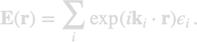

optics.decompose
optics.decompose is a planewave decomposition for incoming fields. It differs from the galerkin.planewave object in that it contains a single field composed of multiple planewave components,

Contents
Initialization
% initialize planewave decomposition % k0 - wavenumber of light in vacuum % efield - electric field components % dir - propagation directions field = optics.decompose( k0, efield, dir );
Methods
% evaluate fields at given positions % tau - discretized particle boundary % pos - requested positions for fields pts = Point( tau, pos ); % place position(s) in photonic environment [ e, h ] = fields( field, pts ); % evaluate planewave decomposition % evaluate fields in stratified medium at given positions % layer - layer structure pts = stratified.Point( layer, tau, pos ); [ e, h ] = fields( field, pts, 'layer', layer ); % secondary fields reflected or transmitted at stratified medium % dir - 'up' for upgoing and 'down' for downgoing waves field2 = secondary( fields, layer, 'dir', dir ); % inhomogeneities for use in BEM solvers qinc = eval( field, tau ); % homogeneous embedding medium qinc = eval( field, tau, 'layer', layer ); % particle in stratified medium
To rotate a planewave decomposition one must provide a rotation matrix, see optics.rotx, optics.roty or optics.rotz.
% rotate planewave decomposition % rot - 3×3 rotation matrix field = rot * field; % apply rotation matrix from lhs field = field * rot .'; % apply rotation matrix from rhs
To shift the planewave decomposition by a shift-vector pos, one must compute the shift-phases and multiply them to the fields.
shift = exp( - 1i * k * field.dir * pos .' ); % shift phases field = field .* shift; % multiply fields with shift phases
Alternatively, one can use the transform function
% rotate and shift planewave decomposition % rot - 3×3 rotation matrix % pos - shift position % mat - material properties for medium where field propagates field = transform( field, 'rot', rot ); field = transform( obj, 'shift', pos, 'mat', mat );
Examples
- demooptics01.m - Focusing of incoming fields.
- demoiscat01.m - iSCAT images for various nanoparticles.
- demoiscat02.m - iSCAT images for gold nanosphere and varying focus planes.
Copyright 2024 Ulrich Hohenester